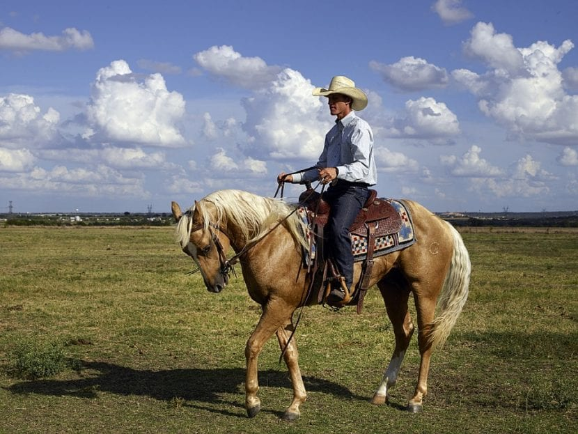
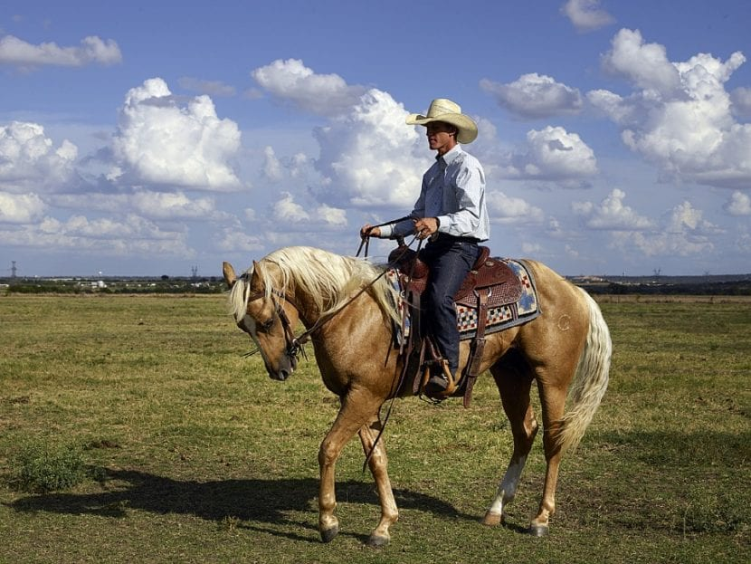

Surf.
A diferencia de lo que parece, el surf es un deporte realmente difícil a la par que entretenido y activo.

Montar a caballo.
Montar a caballo por la playa es de las mejores experiencias que he vivido nunca.
La verdad que el avión a Canadá se hizo más corto de lo que me esperaba , ya que pasé prácticamente el viaje entero dormido o comiendo; y cuando no hacía esto me vi una película en la pantalla del avión.
La cultura en Canadá es realmente increíble, no solo por su gastronomía singular, sino también por sus gentes y los ropajes tradicionales.
A diferencia de lo que parece, el surf es un deporte realmente difícil a la par que entretenido y activo.
Montar a caballo por la playa es de las mejores experiencias que he vivido nunca.
Las temperaturas en Sevilla de verano son muy altas y desagradables, así que lo más conveniente es hacer cosas en interior en las horas de más calor.
Sevilla es una ciudad con muchas cosas que hacer y que ver, sobretodo pasear o ver lugares turísticos , aunque también se pueden hacer otro tipo de planes ya que Sevilla es una ciudad altamente desarollada.